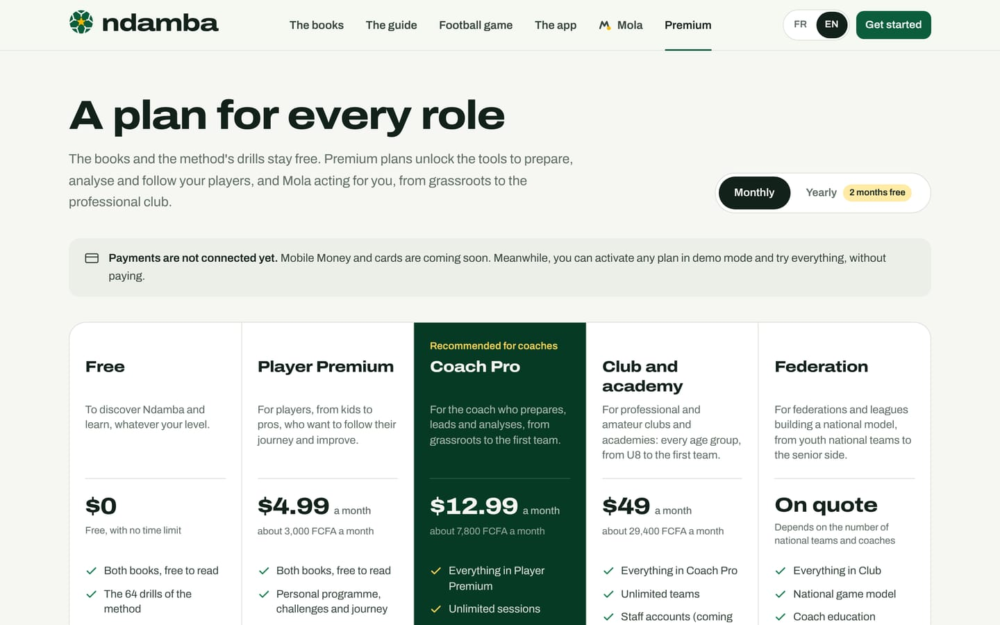

Six profiles, six paths
Ndamba’s six roles, what Mola asks each one, the three home screens (staff, young player and parent, player aged 16 and over), the players’ age tiers, a short path for every profile and the plan that suits it.
9 min read
Ndamba serves the whole football chain, from the nine-year-old player to the federation. Not everyone opens the app looking for the same thing: the youth coach wants today’s session, the parent wants to know how to help, the technical director wants to see all the teams. That is why the first important question Mola asks is about your role. This chapter shows the six roles, what each one sees on arrival, and the shortest path to getting value from the app.
The six roles
In the welcome conversation, after your language and your name, Mola asks: "In football, you are:". Six answers appear, the app’s six roles.
| Role | What Mola asks you next | Home screen | Suggested plan |
|---|---|---|---|
| Coach or educator | The team’s name, its age group, its format, then the players | Staff home | Coach Pro |
| Player | Your age or age group, your position, your club | Young player home before 16, performance home after | Free, then Player Premium |
| Analyst | The club or team you analyse for | Staff home | Coach Pro |
| Parent | Your child’s age or age group | Young player home, with a box for parents | Free |
| Manager or technical director | Your organisation | Staff home | Club and academy |
| Federation or league | Your organisation | Staff home | Federation |
For everyone, the conversation ends with the city, the country and your goals (for example A playing identity, Plan my weeks, Analyse my matches, Develop young players, Read the books, Improve personally). Mola offers the goals that fit your role first. Chapter 5 covers this conversation in detail.
To put it simply: today there are six roles but three home screens. The four staff roles (coach, analyst, manager, federation) share the same home. Your role changes the welcome questions, the goals on offer and, for players, the screen according to age. The menu is the same for everyone: anybody can open any page.
Only the Coach or educator role creates a team during the conversation. The other roles create one afterwards, from the home screen or from Settings. You can change your role at any time: Settings, then Profile, the Role field, and Save profile. On a computer, your role is shown under your name at the bottom of the menu column ("Coach", "Player", "Parent", "Club manager"…); your plan is shown in Settings.
The staff home
Coaches, analysts, managers and federations see the same dashboard, built around one question: what is happening today, and before the next match?
At the top, a banner greets you and shows three figures for the active team: this week’s Sessions, training Minutes, and Match (the countdown, for example D-2). Below it, the Today card shows the day’s session, drill by drill, with Open the session; if nothing is planned, it offers to prepare the session that suits the day. Next to it, the Next match card gives the opponent, date and venue, and three buttons: Prepare the week, Lineup and Live.
Further down come This week (the seven days, with sessions and the match, and the Plan link), the card Njangi Index, last match (the score, its reading, the five sub-indices and the one marked to work on, with See the report), the Mola card, which suggests the next thing to do, and finally Quick actions: New session, Plan the week, New match, Live analysis, Drills and Read the novel.

The coach’s or educator’s path
- Tap Get started with Mola, choose Coach or educator and give your team’s name, age group and players: Mola creates the team.
- Add the next match with New match.
- On the home screen, tap Prepare the week: Ndamba creates the missing sessions on whichever days from MD-4 to MD-1 are still ahead, leaving free the day of another match and the day after it.
- Every day, open the Today card, then Open the session.
- On match day, tap Live and tag the actions.
- After the match, open See the report, then plan the next week around the intention the home screen suggests.
The analyst’s path
- Choose Analyst and give your club; create or activate the team you follow.
- Have the match filmed, put the video on YouTube as "unlisted" or on Facebook, then, in Analysis, tap Add the video on that match and tag it in the studio, marking both kick-offs. Without a video, open Live analysis from the quick actions, or Live on the match card.
- Open the report: Copy as text to send it to the staff, Print for the team talk, and Watch on each goal to find its moment in the video.
- In the studio, draw on the moments to show the players; if the site has activated it, the AI analysis also suggests moments to watch again.
The manager’s or technical director’s path
- Choose Manager or technical director and give your organisation.
- In Settings, under Teams, create one team per age group with New team.
- To move from one team to another, tap the team card at the top of the menu: it opens Settings, where Make active picks the team shown everywhere. The Team page also offers a selector as soon as there are several teams.
- For each team, follow the week and the Index of the last match: the same words and the same drills from U8 to the first team.
The federation’s or league’s path
- Choose Federation or league and give your organisation.
- Read The Njangi Code, in particular chapter 36: ten measures for a federation.
- Open the U13 academy demo, then the Pro club demo, to see the same game model with young players and with professionals.
- Create a national team and tag a first match to get its Njangi Index.
Today, all this data stays on the device where it was entered: a technical director or a federation works on one device and shares data by exporting a backup. Staff accounts and sync between devices are planned.
The young player’s and the parent’s home
Players under 16 and all parents see a different home, designed for learning through play. The banner shows three personal figures: XP (experience points earned with challenges), Streak (days in a row with a challenge) and Today (the day’s challenges completed, out of three).
Then come the My journey card (sessions, matches, the coach’s observations and the season’s objectives), Today’s challenge with the link All three challenges, the My progress card (the stage reached, the streak, Targets hit, Lessons understood out of 40 and My last 7 days), the Lesson of the day taken from the novel with All lessons, the novel card with Read the novel, the team’s next match and My Njangi notebook.

For a parent, the home adds a For parents box at the top: fifteen minutes, a wall and a ball are enough; stay close, help count, remind them to drink water. When the child’s team is on the device, a parent who taps the Your child’s journey card sees the screen "Which record is your child’s?" and picks the child’s record from the squad.

The young player’s path
- Choose Player, give your age, position and club.
- Every day, do Today’s challenge and log your result.
- Read the Lesson of the day, then write what you learned in My Njangi notebook.
- If your team is in Ndamba on this device, tap My journey and pick your name.
The parent’s path
- Choose Parent and give your child’s age or age group.
- Read the For parents box, then do today’s challenge with your child.
- Read the novel and the Ball Lessons together.
- If your child’s team is saved on this device, open My journey and pick your child’s profile to follow the season.
The home of players aged 16 and over
From 16 (the U17 age group), a player trains on the match week like a professional. The home changes tone: the dark banner shows today’s Form (To log until the player has answered), the 7-day load in arbitrary units (AU) and the coming Match with the Index of the last match. In the banner, a line also recalls position, shirt number and team.
The screen then shows My week (every day from MD+1 to the eve of the match, with Usual intensity and Effort logged, then today’s session), the Next match with My place in the planned line-up and The game plan, My form today, My load, My last match (the team’s Njangi Index and My share of the play), My objectives, My season and the Go further links. If the profile is not yet linked to a squad record, a banner offers Link my profile.

The path for players aged 16 and over
- Choose Player and give your age group (from U17 to U21, Seniors or Pro seniors) and your position.
- Link your profile to your squad record with Link my profile.
- Every morning, fill in My form today; after each session, rate your effort from 0 to 10.
- Before the match, check My place and The game plan; afterwards, open My last match.
The age tiers
The app distinguishes three player tiers: under 13, 13 to 16, and 17 and over. To work out a player’s age, it looks first at the birth year on the player’s squad record, then at the profile’s age group (U8 to U21, Seniors, Pro), then at the team’s. When the age remains unknown, the player is treated as a teenager, with the young player home.
| Tier | Home and player space | What changes |
|---|---|---|
| Under 13 | Young player home | Challenges, lessons, notebook; in the journey, match actions with no comparison |
| 13 to 15 | Young player home | The journey adds Passes completed to the match actions |
| 16 | Performance home and space | The match week, form, load, the last match |
| 17 and over | Performance home and space | The journey shows season performance, per 90 minutes |
A parent always keeps the young player home, whatever the child’s age.
Which plan for which profile
The books and the 64 drills are free for everyone, with no time limit. Premium plans are shown per month, in US dollars, with an indicative FCFA equivalent:
| Plan | Price | For whom |
|---|---|---|
| Free | $0 | Discovering and learning: the books, the drills, one team, one match analysed live, Mola to guide you |
| Player Premium | $4.99 a month (about 3,000 FCFA) | The player and the parent: personal programme, challenges, lessons, notebook, annotated videos |
| Coach Pro | $12.99 a month (about 7,800 FCFA) | The coach and the analyst: unlimited sessions, week planning, unlimited live analysis, reports, video, Mola acting for you |
| Club and academy | $49 a month (about 29,400 FCFA) | The manager and the technical director: every age group |
| Federation | On quote | Federations and leagues |
One option can be added to any plan: the AI match analysis, proposed at $2.99 per match (chapter 24).

